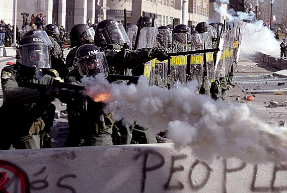

Tear gas is a general term for any non-lethal chemical used to cause temporary incapacitation through the irritation of eyes and/or respiratory system. Because tear gas is widely used by police departments to subdue large groups of unruly people in riot situations, it is often referred to as a “riot control agent”.
“The limitation of riots, moral questions aside, is that they cannot win and their participants know it. Hence, rioting is not revolutionary but reactionary because it invites defeat. It involves an emotional catharsis, but it must be followed by a sense of futility.”
- Martin Luther King, Jr.